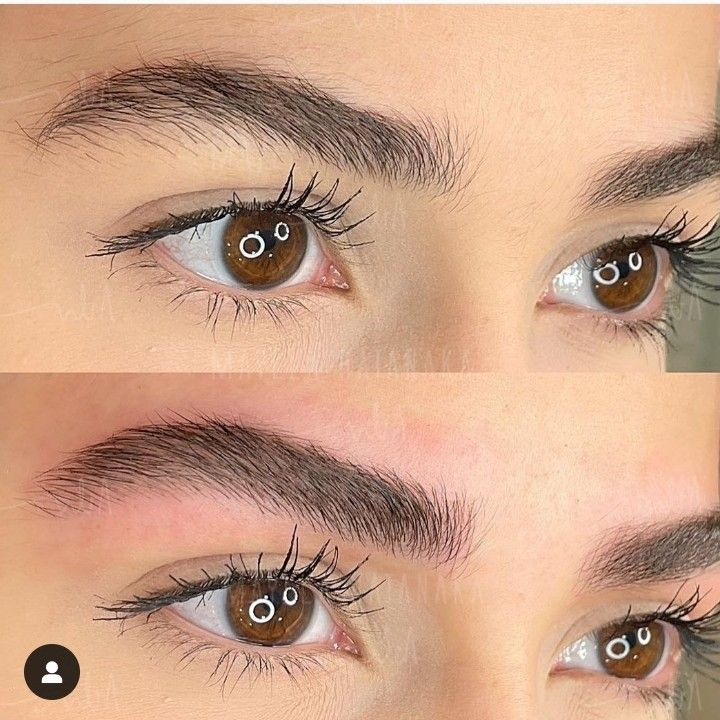
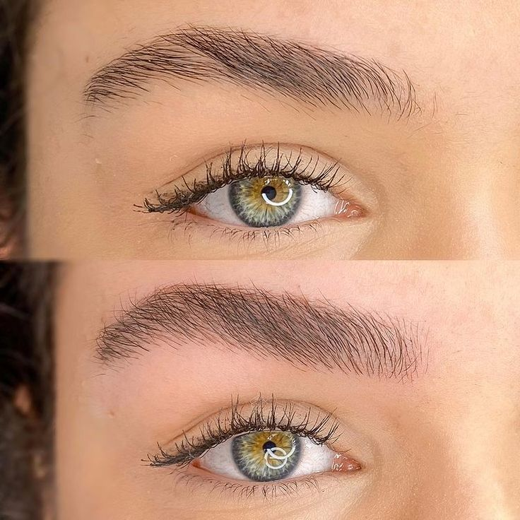
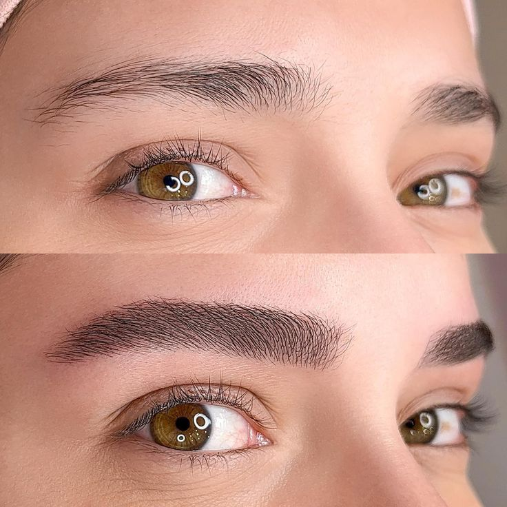
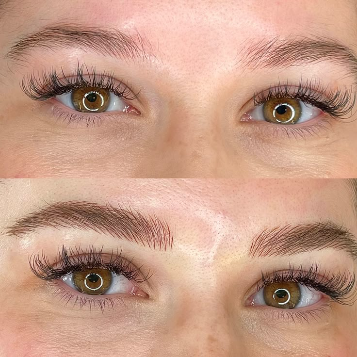

Ariane Duarte, especialista em design de sobrancelhas e apaixonada pelo universo da estética.
Encontrei no design uma forma de cuidar, transformar e realçar a beleza natural de cada um, fio a fio, com leveza e delicadeza.
Minha missão é entregar um olhar mais confiante, harmonioso e único, sempre com muito carinho e dedicação.
Nossos procedimentos são personalizados, respeitando o que você tem de mais lindo, sua essência e características únicas.
Brow Lamination
A Brow Lamination é uma técnica que organiza e realinha os fios naturais das sobrancelhas, criando um efeito de maior volume, simetria e definição. Ele é ideal para quem sente que os fios são rebeldes, ralos ou difíceis de manter no lugar, e deseja um resultado natural sem precisar de maquiagem todos os dias. Com o procedimento, é possível conquistar sobrancelhas mais cheias, alinhadas e elegantes, trazendo praticidade no dia a dia e um olhar mais expressivo e rejuvenescido.






Sobre o Brow Lamination
Se você já se frustrou com a assimetria das suas sobrancelhas ou com a necessidade de retocá-las várias vezes ao dia, o Brow Lamination é a resposta. Ele resolve a dor de ter fios que crescem em direções diferentes, através de um processo químico suave que flexibiliza a estrutura do fio. Por isso, após o procedimento, é fundamental aplicar um produto nutritivo e hidratante, que devolve a maciez e protege os fios, garantindo um acabamento sofisticado e saudável.
No Studio Bella Lumea, esse cuidado faz parte do nosso protocolo: além de alinhar as sobrancelhas, nós tratamos os fios para que permaneçam fortes e bonitos.
A Brow Lamination não é sinônimo de fios arrepiados como vemos muitas vezes na internet, quando bem executada ela traz um resultado sofisticado de sobrancelhas alinhadas, proporcionando elegância e praticidade no dia a dia.
Praticidade e durabilidade: a liberdade que você precisa
O Brow Lamination dura de 4 a 6 semanas, oferecendo uma solução de baixa manutenção para a sua rotina de beleza. Durante esse período, suas sobrancelhas permanecerão impecáveis, prontas para qualquer ocasião. É o investimento ideal para quem busca otimizar o tempo e ter a confiança de um olhar sempre bem cuidado.
Para quem é indicado?
- Para quem tem fios rebeldes que não ficam no lugar.
- Para quem sente que as sobrancelhas estão ralas ou sem definição.
- Para quem deseja praticidade no dia a dia, acordando já com o visual perfeito.
- Para quem busca um olhar mais jovem e expressivo.
- Sobrancelhas mais cheias e volumosas.
- Fios sempre alinhados e no lugar.
- Efeito de lifting natural, levantando o olhar.
- Praticidade: adeus ao excesso de maquiagem nas sobrancelhas.
- Autoestima elevada com um visual sofisticado e moderno.
O que nossos clientes dizem
Cristiane L
★★★★★
"Ótimo resultado. Atendimento profissional. Ficou perfeito! Recomendo!"
Nina Kolos
★★★★★
"Profissional excepcional! Fiquei encantada com o resultado e recomendo de olhos fechados!"
Cristiane Mariano
★★★★★
"Adorei. Minhas sobrancelhas tinham o final ralo e agora estão com formato bem definido. Lugar organizado e pontual no horário de atendimento."
Fabio Costa
★★★★★
"Simplesmente amei o resultado! Dá pra ver o carinho e o cuidado da profissional em cada detalhe. Muito atenciosa e dedicada. Super recomendo!"
Joice Araújo Ferreira
★★★★★
"Ótima profissional, trabalho excelente, super indico. Além de ser uma profissional de excelência, também é receptiva e muito atenciosa."
Izabela Ramalho
★★★★★
"Profissional incrível e atendimento excelente! Superou todas as minhas expectativas!"